Browser game · October 2026
Monday, 8:55

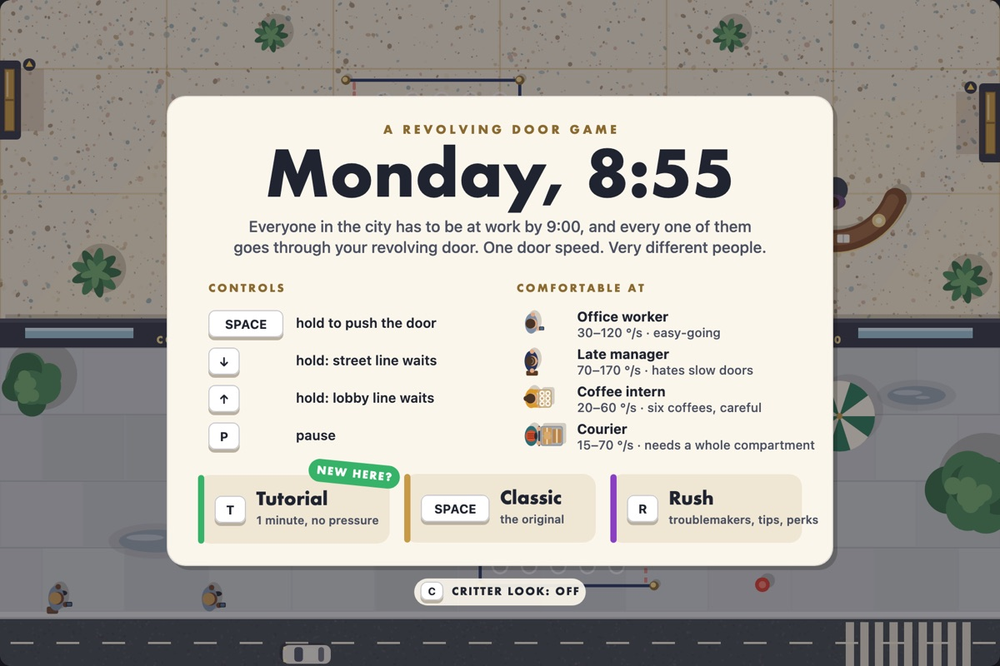
JavaScript and one HTML canvas, no libraries, Claude Code
A game I inherited and finished. You are the doorman of an office building's revolving door in the five minutes before 9:00 on a Monday. Hold Space to push the door, hold an arrow key to make a line wait, and keep every rider at a speed they can stand: late managers hate a slow door, coffee interns spill on a fast one, and sooner or later they ride together. The idea, the spec and the first version came from another student in Effective Coding with AI, a Carnegie Mellon course. For the course's code handoff assignment I took over that repo, kept the original design, and built it out to the spec.
What it is
You are the doorman of an office building's revolving door during the five minutes before 9:00 on a Monday. Everyone in the city has to get through your door, and they do not agree on how fast it should turn.
- Hold Space to push the door. Let go and it slows down, slowly. There is no brake.
- Hold ↓ or ↑ to make the street line or the lobby line wait.
- Keep every rider inside the speed they can stand. Office workers are easygoing. Late managers hate a slow door. Coffee interns spill on a fast one. Couriers need a whole compartment for their cart.
- Three complaints and you are fired. Let a line back up to the gridlock mark and the fire marshal ends your morning. Make it to 9:00 and nobody will ever thank you.
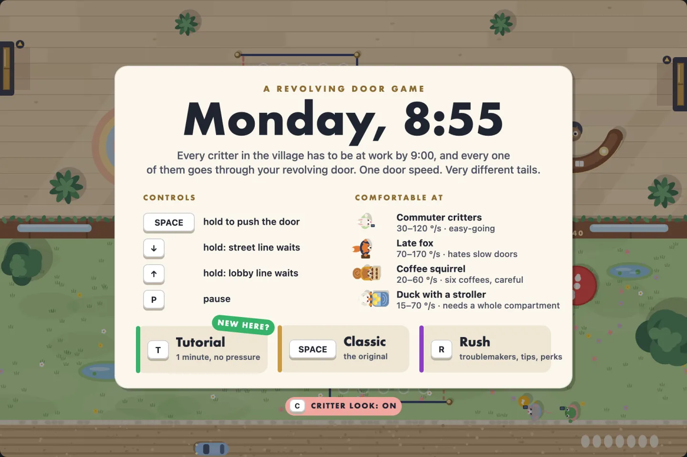
The whole game is about one shared number. Everyone in the door rides at the same speed, so the speed meter shows each rider's comfort band, and the green SAFE ZONE is where the bands overlap. When a manager and an intern ride together, there may be no safe speed at all.
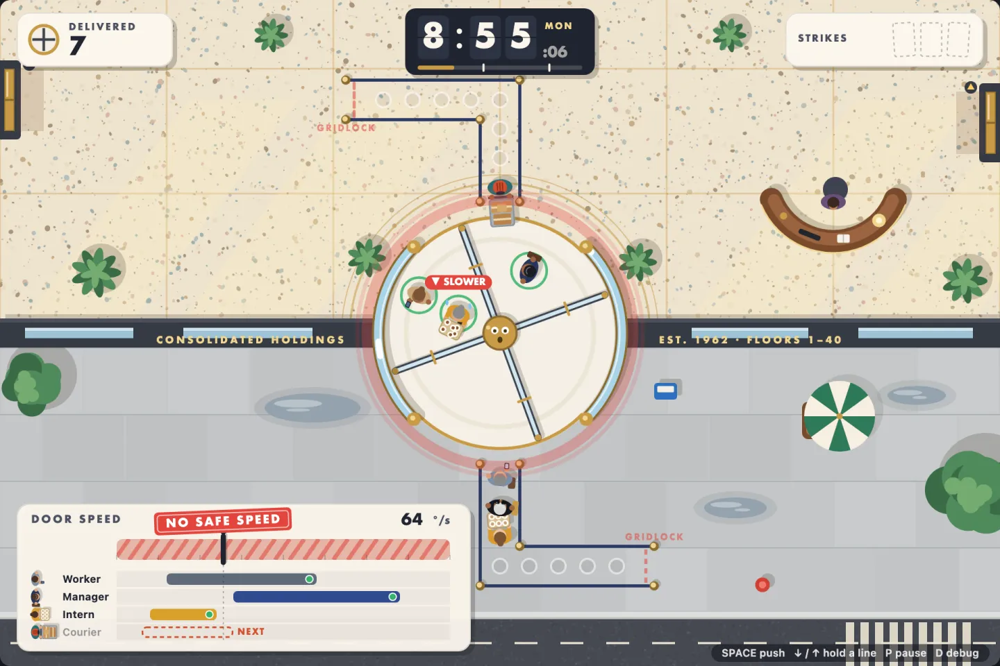
A tour
The round gets busier as the clock runs. By 8:59 both lines are long and the door is full.

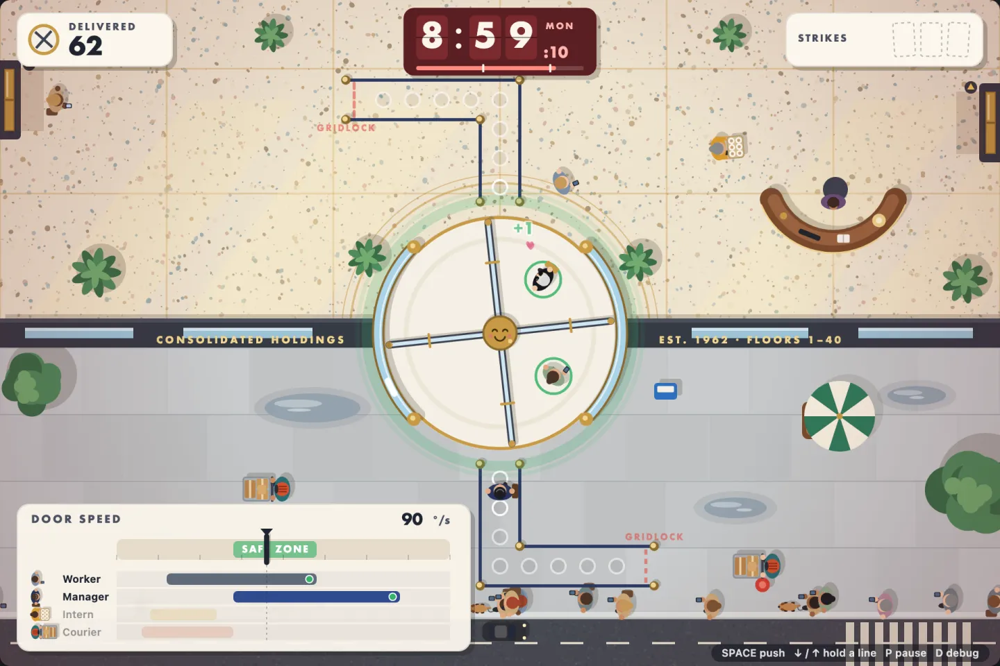

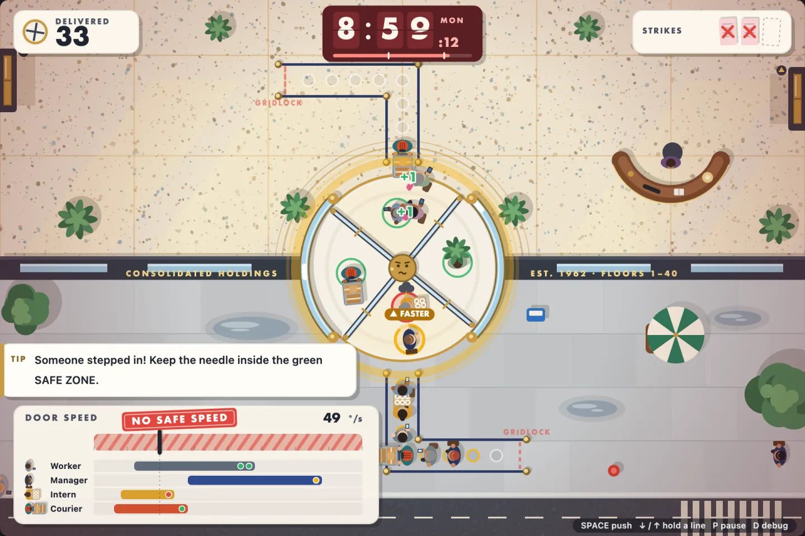

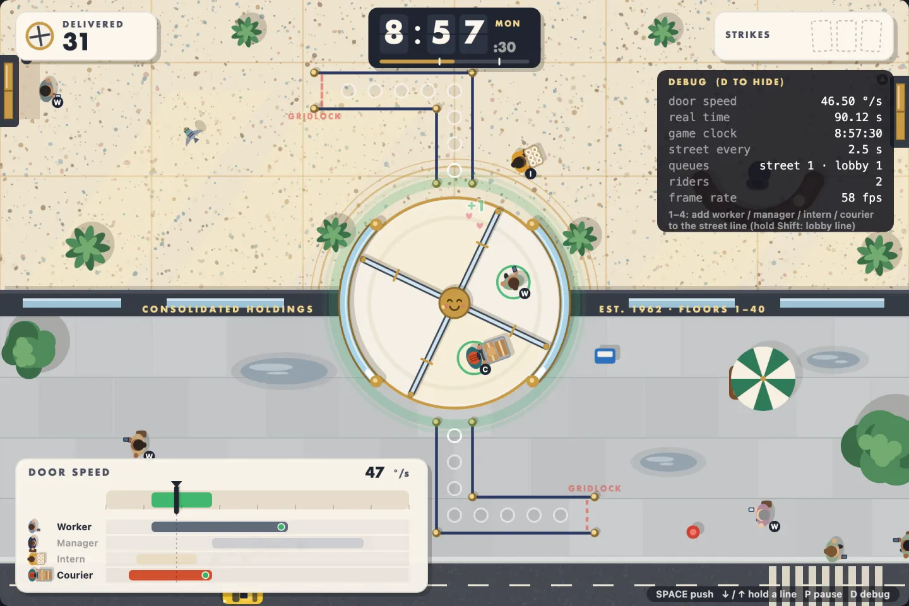
Classic is the game the original spec describes. Rush adds troublemakers you have to keep out with the gates, tips for happy deliveries, VIPs, 30-second jobs, and perks you buy with your tips. A one-minute tutorial teaches one control at a time. Pressing C swaps the office crowd for a village of animals, with a duck pushing a stroller of ducklings as the courier. The rules do not change.

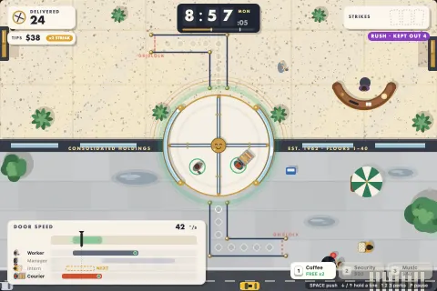

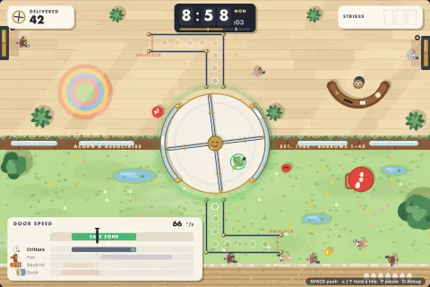

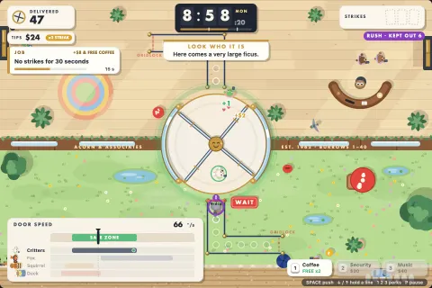

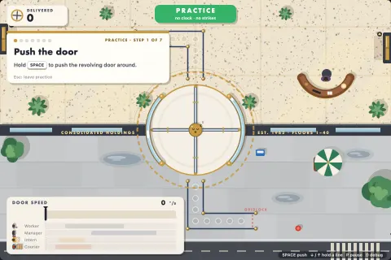
Every round ends on a report card with a rank.

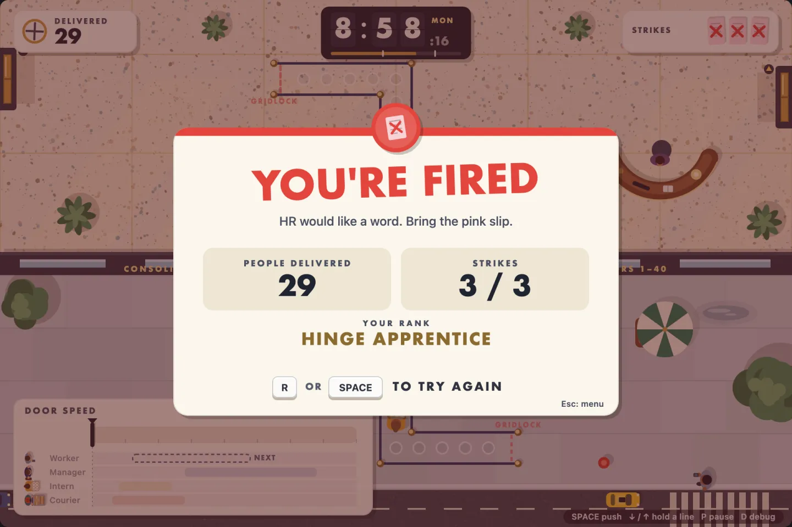

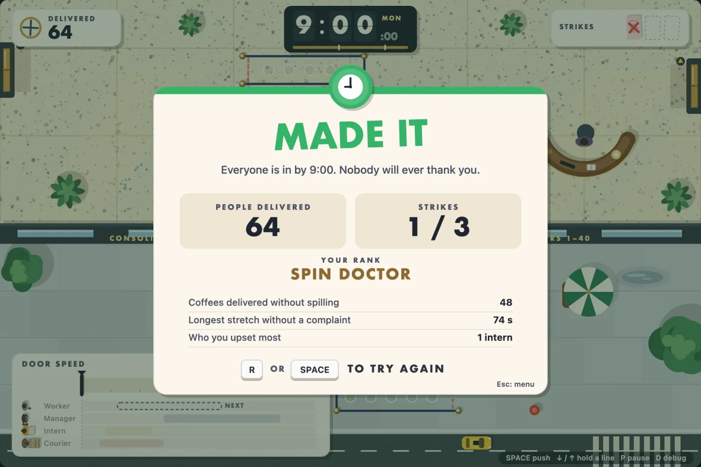
How I built it
This was a code handoff. Another student in the course designed the game, wrote the spec with 31 acceptance criteria, and built a first version. I inherited the repo and was not allowed to talk to its author. The rules: keep at least three quarters of the original work, work inside its design, and report back honestly.
I started by having Claude Code read every file and tell me what worked and which criteria were closest to done, without changing anything. It found a trap the README missed: several tests used a fixed random number that only picked the intern because the intern was last in the list of passenger types. Adding the courier would have quietly turned them into courier tests.
Then I asked for a plan for the best version of what the spec asks for, and let it work through the plan overnight on its own branch, committing after each phase. The rules stay in their original classes. A new visual layer reacts to events from the rules and never changes them, so the tests and a simulated player run the real game in Node with no browser. That made it possible to check the game without a person watching:
- A careful bot and a sloppy bot play hundreds of rounds and report how often each makes it to 9:00. The first run had both fired every time, which exposed a real design hole: people could appear and step into a fast door on the same frame. A two-second walk-up fixed it.
- Scenario links jump straight to a moment, like 8:59 with a full door, so screenshots and checks don't depend on playing for four minutes.
After I played it, I asked for more fun without more stress. That became Rush, the tutorial and the Critter look, all kept apart from Classic. Then I tuned for "tense but fair" from the bots' numbers: the careful bot now makes it to 9:00 in 79% of rounds and the sloppy one in 10%. When I still couldn't beat it, the problem turned out to be that I couldn't tell why I was getting strikes, so every strike now explains itself, and riders warn you before they complain.
What went wrong
The AI made a rule change to Classic, the two-second walk-up, without asking me. It had a good reason and wrote it down at the bottom of the spec, but it only came up when I asked "have you changed the spec since handoff?" I kept it.
It also replaced the original drawing code outright. That brought the share of original code close to the assignment's limit, so the README now explains what was kept, what was replaced and why, and which new function replaced each old one.
And once it reported two bot numbers that measured different things, which made the sloppy bot look better than the careful one. Asking why gave the real comparison. All three are written up in the prompt log, along with every prompt.
Decisions that mattered
- Classic stays the game the original spec describes. Everything new lives in separate modes: Rush adds troublemakers to keep out, tips, VIPs, 30-second jobs and perks; a one-minute tutorial teaches one control at a time; and a Critter look swaps the office crowd for animals without changing a rule.
- The rules never draw and the drawing never changes the rules, so the tests and a simulated player run the real game with no browser. I tuned the difficulty from 500-round runs of a careful bot and a sloppy one: the careful bot makes it to 9:00 in 79% of rounds, the sloppy one in 10%.
- Every strike explains itself: who complained, how fast the door was against their limit, and what to do instead. Riders show a SLOWER or FASTER warning before they complain.
- The repo keeps the original author's code as its untouched first commit, a met or not met line for each of the spec's 31 criteria, a handoff report, and every prompt, including the times the AI did something I did not want.